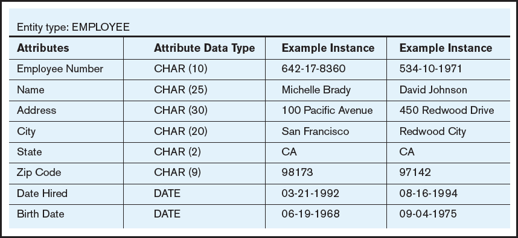
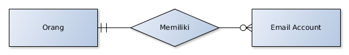
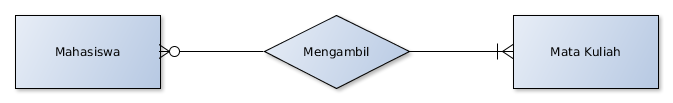
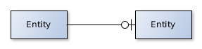
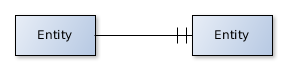
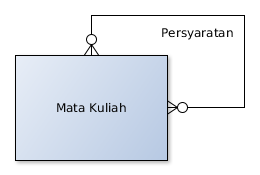
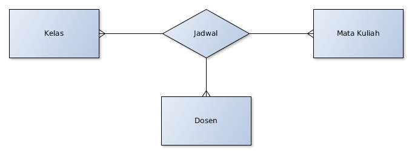

Sistem Basis Data
Perancangan Basis Data
Tahapan Perancangan Basis Data
Terdiri dari 6 tahap:
Requirement Analysis
Conceptual Database Design
Schema Refinement
Logical Database Design
Physical Database Design
Application and Security Design
Requirement Analysis
Data apa yang akan disimpan?
Aplikasi apa yang akan mengakses data dari databse?
Operasi apa yang akan dieksekusi pada database?
Conceptual Database Design
Deskripsi bagaimana data disimpan, diolah dan dikelola
Constraint (aturan/batasan) mengenai data yang disimpan pada database
Digunakan untuk mengkomunikasikan design database antara developer database dengan pengguna (end user)
Salah satu model yang dibuat: Entity Relationship Model
Tool yang digunakan: Entity Relationship Diagram (ERD)
Schema Refinement
Melakukan design lebih lanjut terhadap skema database untuk mengurangi/menghilangkan masalah yang mungkin muncul
Terdapat 3 anomali yang mungkin timbul pada database relasional: insertion, update dan deletion anomaly
Proses normalisasi (database normalization) untuk menghilangkan anomali
Logical Database Design
Menerjemahkan design database ke dalam schema database sesuai dengan DBMS yang digunakan
Untuk database relasional akan dituliskan ke dalam definisi table
Menggunakan perintah SQL Data Definition Language (DDL)
Physical Database Design
Optimasi database untuk meningkatkan kinerja database
Proses yang dilakukan biasanya termasuk pembuatan index, partition, cluster, denormalization
Application and Security Design
Who, What (and When/Where)
Siapa yang boleh mengakses database
Data apa yang boleh diakses? (table, kolom, baris)
Kapan akses diperbolehkan atau dari mana
Entity Relationship Diagram (ERD)
Menggambarkan aliran data dalam bentuk hubungan antar object
Terdiri dari:
Entity
,
Atribut
dan
Relation
Entity merepresentasikan object pada dunia nyata yang datanya akan disimpan pada database
Setiap entity memiliki kumpulan atribut yang mendifinisikan entity tersebut
Setiap entity memiliki relasi dengan entity lain yang menggambarkan interaksi antar object
Entity
Object yang memiliki peran penting dalam proses bisnis dan datanya perlu disimpan di database
Biasanya dituliskan dalam kata benda, mis. Barang, Jadwal Kuliah
Entity diimplementasikan menjadi tabel di dalam database
Instance entity diidentifikasi melalui atribut kunci
Atribut
Data entity yang akan direkam ke dalam database
Setiap instance dari entity yang sama memiliki kumpulan atribut yang sama
Instance entity direpresentasikan ke dalam baris (record, tuple), atribut entity direpresentasikan ke dalam kolom (field)
Entity, Atribut & Instance

Relationship
Menggambarkan hubungan antara satu entity dengan entity lainnya

Relationship Cardinality
Setiap hubungan entity dideskripsikan dengan cardinality, banyak hubungan antar instance entity
Jenis cardinality:
One-to-One
One-to-Many
Many-to-Many
Relationship One-to-One
1 instance entity terhubung ke 1 instance entity lainnya
Mis: 1 penduduk memiliki 1 kartu pemilihan umum
Relationship One-to-Many
1 instance entity terhubung ke banyak instance entity lainnya
Mis: 1 orang memiliki banyak email account
Relationship Many-to-Many
Banyak instance entity terhubung ke banyak instance entity lainnya
Mis: mahasiswa mengambil mata kuliah

Cardinality Constraint
Aturan mengenai jumlah hubungan antar instance entity
Terdiri dari:
Optional one

Mandatory one

Optional many
Mandatory many
Relationship Degree
Banyak entity yang terlibat pada sebuah relationship
Unary

Binary
Ternary 